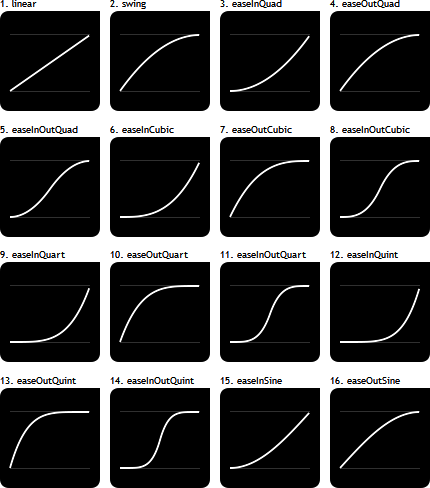
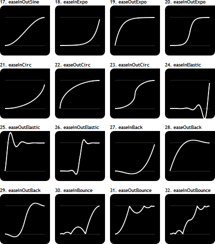
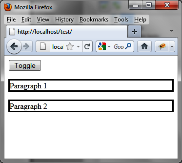
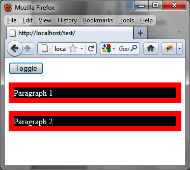

{% include JB/setup %}
{% raw %}
<div>
<div class="book" title="Producing Effects with CSS Classes"><div class="book"><div class="book"><div class="book"><h1 class="title2"><a id="producing_effects_with_css_classes" class="calibre1"></a>Producing Effects with CSS Classes</h1></div></div></div><p class="calibre7">jQuery methods for managing CSS classes have been improved in jQuery
    UI to manage the visual effects.</p><div class="book"><div class="figure"><a id="values_for_the_easing_option_open_parent" class="firstname"></a><div class="book"><div class="book"><a id="I_mediaobject14_d1e14942" class="firstname"></a></div></div><p class="title4">Figure 14-16. Values for the easing option (1)</p></div></div><div class="book" title="The addClass (), removeClass (), and toggleClass () Improved Methods"><div class="book"><div class="book"><div class="book"><h2 class="title5"><a id="the_addclass_open_parenthesis_close_pare" class="calibre1"></a>The addClass (), removeClass (), and toggleClass () Improved
      Methods</h2></div></div></div><p class="calibre7">jQuery UI has also improved the <code class="literal">addClass
      ()</code>, <code class="literal">removeClass ()</code>, and
      <code class="literal">toggleClass ()</code> methods provided by
      jQuery. The options for these classes are listed in <a class="ulink" href="ch14s04.html#the_toggleclass_open_parenthesis_close_p" title="Table 14-14. The toggleClass () method parameters">Table 14-14</a>.</p><p class="calibre7">The new form of the <code class="literal">addClass ()</code>
      method is:</p><a id="I_programlisting14_d1e14968" class="firstname"></a><pre class="programlisting">$(selector, context).addClass (className, duration, easing, callback);</pre><p class="calibre7">The new form of the <code class="literal">removeClass
      ()</code> method is:</p><a id="I_programlisting14_d1e14975" class="firstname"></a><pre class="programlisting">$(selector, context).removeClass (className, duration, easing, callback);</pre><p class="calibre7">The new form of the <code class="literal">toggleClass
      ()</code> method is:</p><a id="I_programlisting14_d1e14982" class="firstname"></a><pre class="programlisting">$(selector, context).toggleClass (className, addOrRemove, duration,
                                  easing, callback);</pre><div class="book"><div class="figure"><a id="values_for_the_easing_option_open_pa" class="firstname"></a><div class="book"><div class="book"><a id="I_mediaobject14_d1e14987" class="firstname"></a></div></div><p class="title4">Figure 14-17. Values for the easing option (2)</p></div></div><div class="table"><a id="the_toggleclass_open_parenthesis_close_p" class="firstname"></a><p class="title7">Table 14-14. The toggleClass () method parameters</p><div class="book"><table summary="The toggleClass () method parameters" class="calibre14"><colgroup class="calibre15"><col class="calibre16"/><col class="calibre16"/></colgroup><thead class="calibre17"><tr class="calibre18"><th valign="bottom" class="calibre19"><p class="calibre7">Parameter</p></th><th valign="bottom" class="calibre19"><p class="calibre7">Function</p></th></tr></thead><tbody class="calibre20"><tr class="calibre18"><td valign="top" class="calibre21"><p class="calibre7"><code class="literal">className</code></p></td><td valign="top" class="calibre21"><p class="calibre7">String containing one or
              more CSS classes (separated by spaces).</p></td></tr><tr class="calibre22"><td class="calibre23"><p class="calibre7"><code class="literal">duration</code></p></td><td class="calibre24"><p class="calibre7">Indicates the number of milliseconds of the effect.
              A value of 0 takes the element directly in the new style,
              without progressivity.</p></td></tr><tr class="calibre18"><td class="calibre23"><p class="calibre7"><code class="literal">easing</code></p></td><td class="calibre24"><p class="calibre7">Indicates the way to progress in the
              effect.</p></td></tr><tr class="calibre22"><td class="calibre23"><p class="calibre7"><code class="literal">callback</code></p></td><td class="calibre24"><p class="calibre7"><code class="literal">callback ()</code> method called for
              each element when the effect is complete for this element. This
              value in the function represents the DOM element for which the
              effect is complete.</p></td></tr><tr class="calibre18"><td valign="top" class="calibre21"><p class="calibre7"><code class="literal">addOrRemove</code></p></td><td valign="top" class="calibre21"><p class="calibre7">Optional Boolean
              indicating whether to add the CSS class (if <code class="literal">true</code>) or delete it (if <code class="literal">false</code>). If not specified, the CSS is
              removed if present.</p></td></tr></tbody></table></div></div></div><div class="book" title="The switchClass () Method"><div class="book"><div class="book"><div class="book"><h2 class="title5"><a id="the_switchclass_open_parenthesis_close_p" class="calibre1"></a>The switchClass () Method</h2></div></div></div><p class="calibre7">In addition to the improvement of the <code class="literal">addClass ()</code>, <code class="literal">removeClass ()</code>, and <span class="firstname"><code class="literal">toggleClass
      ()</code></span> methods, jQuery UI includes a new <code class="literal">switchClass ()</code> method to move from one CSS
      class to another.</p><p class="calibre7">The <code class="literal">switchClass ()</code> method has
      the following form:</p><a id="I_programlisting14_d1e15078" class="firstname"></a><pre class="programlisting">$(selector, context). switchClass (classNameRemoved,classNameAdded, duration,
                                   easing, callback);</pre></div><div class="book" title="Example of Using the toggleClass () Method"><div class="book"><div class="book"><div class="book"><h2 class="title5"><a id="example_of_using_the_toggleclass_open_pa" class="calibre1"></a>Example of Using the toggleClass () Method</h2></div></div></div><p class="calibre7">Here is an example of using <code class="literal">toggleClass
      ()</code> method. The Toggle button allows you to add or remove a CSS
      class (here, class1) on each paragraph by producing an effect. Once the
      new style is applied (after the first click), click the button again to
      restore the original style (Figures <a class="ulink" href="ch14s04.html#using_the_toggleclass_open_parenthesis_c" title="Figure 14-18. Using the toggleClass () method: before clicking the Toggle button">14-18</a> and <a class="ulink" href="ch14s04.html#using_the_toggleclass_open_parenthes" title="Figure 14-19. Using the toggleClass () method: after clicking the Toggle button">14-19</a>).</p><p class="calibre7">The CSS <code class="literal">border-style</code> property
      is not scalable, and it is not integrated into the CSS class:</p><a id="I_programlisting14_d1e15097" class="firstname"></a><pre class="programlisting">&lt;script src = jquery.js&gt;&lt;/script&gt;
&lt;script src = jqueryui/js/jquery-ui-1.8.16.custom.min.js&gt;&lt;/script&gt;

&lt;link rel=stylesheet type=text/css
      href=jqueryui/css/smoothness/jquery-ui-1.8.16.custom.css /&gt;

&lt;style type=text/css&gt;
  .class1 {
    border-width : 10px;
    border-color : red;
    background-color : black;
    color : white;
  }
&lt;/style&gt;

<span class="firstname"><strong class="userinput">&lt;button onclick=toggle()&gt; Toggle &lt;/button&gt;</strong></span>

&lt;p style=border-style:solid&gt; Paragraph 1 &lt;/p&gt;
&lt;p style=border-style:solid&gt; Paragraph 2 &lt;/p&gt;

&lt;script&gt;

<span class="firstname"><strong class="userinput">function toggle ()</strong></span>
<span class="firstname"><strong class="userinput">{</strong></span>
  <span class="firstname"><strong class="userinput">$("p").toggleClass ("class1", 1000);</strong></span>
<span class="firstname"><strong class="userinput">}</strong></span>

&lt;/script&gt;</pre><div class="book"><div class="figure"><a id="using_the_toggleclass_open_parenthesis_c" class="firstname"></a><div class="book"><div class="book"><a id="I_mediaobject14_d1e15117" class="firstname"></a></div></div><p class="title4">Figure 14-18. Using the toggleClass () method: before clicking the Toggle
        button</p></div></div><div class="book"><div class="figure"><a id="using_the_toggleclass_open_parenthes" class="firstname"></a><div class="book"><div class="book"><a id="I_mediaobject14_d1e15125" class="firstname"></a></div></div><p class="title4">Figure 14-19. Using the toggleClass () method: after clicking the Toggle
        button</p></div></div></div></div></div>

{% endraw %}

